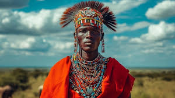
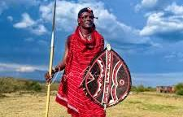
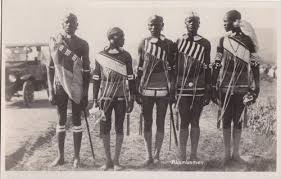
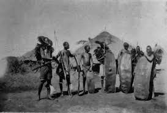

Chief's Attire
Agikuyu
Maasai

Warrior's Attire
Maasai

Akamba

Luhya

Wedding Attire
Agikuyu
Maasai
Akamba
Giriama
About us
Welcome to a page purposing to bring back a people forgotten and burried with the ancestors.Once an item of pride turned to nothing but just stories and myths.We hope to reconnect with what is hopefully still our pride.
We are also glad to infirm you that you are able to request for content added where you feel was left out. just write down yor request in the comment section.
contact us
Stay connected


You can also reach us through our social pages provided above for any concern you may have. We are available to listen at any tim eof the day until 10:00 pm Mon-Saturday